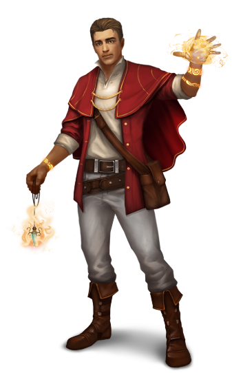
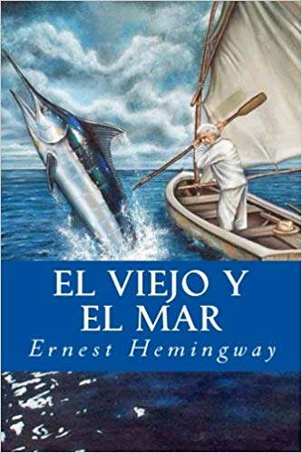

Nombre: Jeison José Ortiz Galvez.
Universidad: Unicauca.
Ocupación: Estudiante de Ingeniería de Sistemas
Cumpleaños:Noviembre 10 de 1995
Lugar de Nacimiento: Popayán (Cauca).
Celular: 314 621 5307
Hobbies: Peliculas, Caminar, Musica, Guitarra, Video Juegos.
Rol en la Tribu Lobos Guerreros: Heler.
Mis Libros Favoritos.

Titulo: La Divina Comedia.
Descripcion: Este vasto poema en tres partes presenta alegóricamente el itinerario del alma, desde las torturas del Infierno al Purgatorio y a las cumbres del Paraíso. La marcha de Dante por el Más Allá empieza la noche del 7 de abril de 1300, cuando el poeta tenía treinta y cinco años, edad que considera “la mitad del camino de nuestra vida”: Virgilio, símbolo de la cultura antigua, en la que se había nutrido Dante Alighieri, y Beatriz, símbolo de la Revelación cristiana, guían sucesivamente al poeta en su misterioso viaje. Es una sublime summa poética del saber medieval y un maravilloso crisol de elementos teológicos, científicos y líricos. La Divina Comedia es la obra cumbre de toda la Edad Media y una de las creaciones señeras de la poesía universal.
